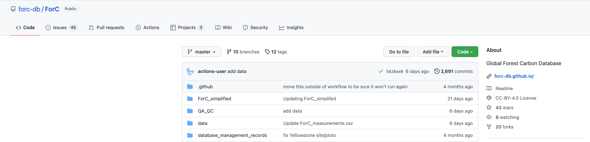
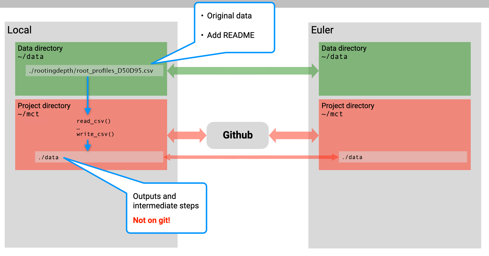
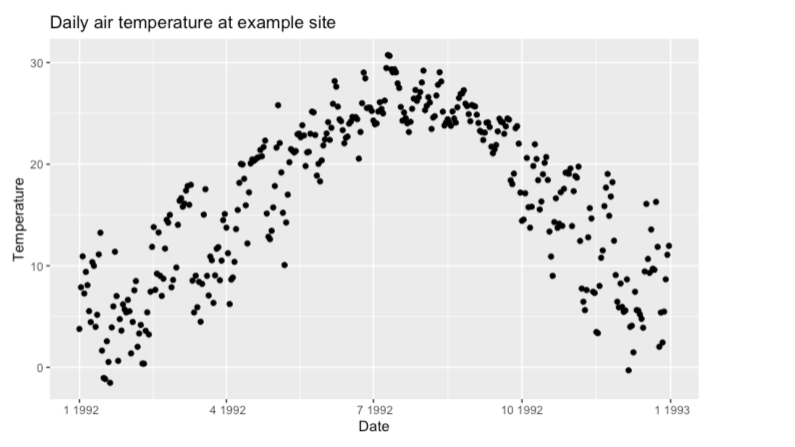
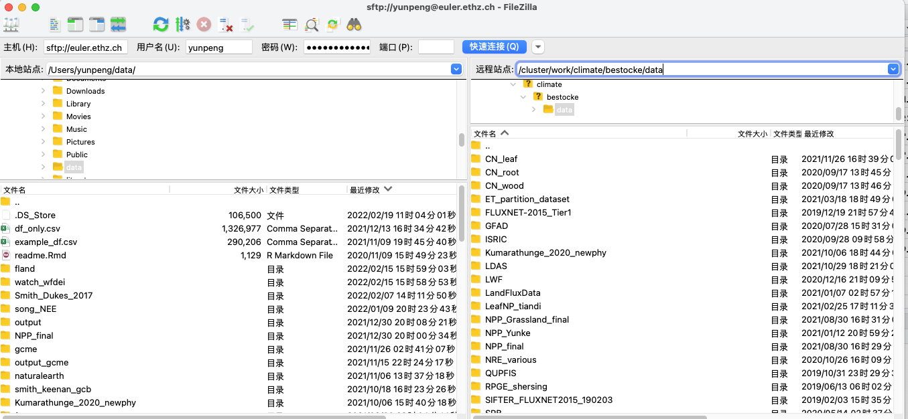
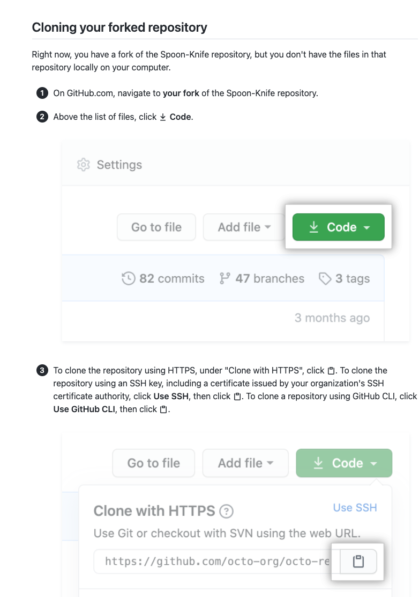
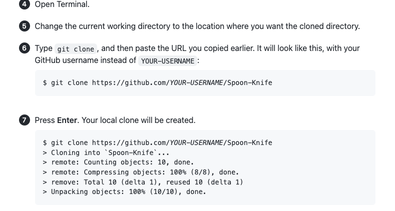

Chapter 6 Open Science
Authors: Francesco Giardina, Yunke Peng, Koen Hufkens, Benjamin Stocker
6.1 Motivation
6.1.1 Why should I care?
The immediate benefits of working reproducibly for the individual are manifold. They include:
Resuming work after absence becomes easier.
By consequence, implementation of revisions of a paper become faster.
Writing legible code and documenting a project ensures that you can hand it off easily to collaborators.
Using a project-based approach (read below for more info) retains most data in one spot. This way, data and code can easily be moved from system to system.
Movable projects allow for local development but remote (cluster) deployment of projects.
Legible code and the use of version control software allow for a team to quickly iterate over a problem if needed.
6.1.2 Some history
The importance of good data management transcends the success of a scientific project itself: It guarantees the reproducibility of results, thus encouraging the scientific community to reuse a workflow - a key concept for the advancement of science.
After an attempt to standardize the practice of open science in 2007, it was not until 2016 that representatives of academia, industry, funding agencies and publishers convened to define a set of principles that would become known as the FAIR Data Principles. Later that year, during its 2016 G20 Hangzhou summit, the G20 approved the use of FAIR principle within research. In short, the FAIR data principles mean that data is:
- Findable: Data should be easy to find, both by humans and machines. There is a strong emphasis on the use of metadata and the assignment of data identifiers.
- Accessible: The access to data should be open, free and universally implementable. If necessary, an authentication and authorization procedure should be clearly explained.
- Interoperable: This refers to the ease of integration with other data. It should be easy to interoperate within a workflow for analysis, storage and processing
- Reusable: The documentation of data should be clear enough to allow reusability, which is the ultimate goal of FAIR principles
6.1.3 Why is it important?
Open Science refers to the effort to make scientific research available to peers in academia and to the public, to foster the dissemination of findings and the development of knowledge. It involves a methodical change to the research cycle, promoting more exchange and collaboration. The shift to an open science practice is not trivial, and often encompasses a cultural change, but it is essential for strengthening the link between scientific research and society. Contributing towards this effort, the European Union is leading the way with several initiatives (The Facilitate Open Science Training for European Research (FOSTER), The European Open Science Cloud (EOSC), OpenAIRE).
The transition to open science over the past few years has been motivated by a “reproducibility crisis,” i.e. the failure to replicate scientific results. Recent evidence has found that in the field of medicine, less than half of scientific findings may not be reliable (Ioannidis, 2005). Practicing open science offers a solution to this problem, as sharing materials and data eases the replication of original studies by other scientists. Open science is made possible by open data, i.e. when the data itself is freely accessible to other peers and the public. Policies enabling open data allow researchers to innovate, starting from existing knowledge. Other essential benefits for scientists include reputational gains, increased visibility and impact, and a broader increase in the reliability of research, as it enables the replication and verification of scientific results. This in turn boosts citizens’ trust in science.
The revolution of open science is not limited to the academic world alone. Society is a consumer of science - from the computer you’re reading this article on, to the vaccines that are taking the world out of the current pandemic.
Another key advantage of scientific results being accessible without a fee is that anyone can benefit from them, regardless of their location or economic situation. This is especially important for the scientific community in developing countries. In the end, open science speeds up the circulation of new information and helps generate solutions to the current great challenges. As Isaac Newton said in his 1675 letter: “If I have seen further, it is by standing on the shoulders of Giants.”
Last but not least, by making your code, data, and methods freely available, you are creating more citable items per published project. This will grant more visibility to your research, as well as possibly increasing the total number of times your work get referenced. It can trigger new collaborations and strengthens the impact of your research.
6.1.4 Obstacles to Open Science
Obstacles to the development of open science trace back to when journals were still in paper format, and storing and sharing materials and data was difficult. Luckily for us, technology is making it easier to practice open science.
Another problem is that journal articles are basically a summary of long months (and sometimes years) of research. This means that in the final report, some part of the analysis must be summarized or excluded, for the sake of brevity. Papers with a clean story and clear results tend to be published more easily. In the end, what we are presented with in a published article can be far from the actual trial and error steps of the scientific method. Nevertheless, this phenomenon causes a impoverishment of science, as other scientists could benefit from those “failed” attempts.
Finally, another obstacle is the time constraint imposed by the current incentive structure. In the current academic world, publications are the easiest way for scientists to propel their careers forward. In this frame of things, it is thus hard to dedicate more time to a process which may not bring direct benefits in terms of primary research articles. However, considering the bigger picture as described above, open science bring advantages both to the single researcher and the scientific community.
6.2 Data resources
6.2.1 Environmental data repositories
The following is a limited list of permanent data repositories for (environmental) data.
6.2.2 Some of our favourites
TRY database: https://www.try-db.org/TryWeb/Prop2.php It includes all possible leaf traits (mainly in natural environments). Following instructions below. You can find a traits list in left bottom “show traits” and each number would mean an unique traits (e.g. 1 means leaf area). Then just add all numbers you want together, and press continue to fill rest of information. Please note, never putting too many variables one time as it it could make the document too large to download.

…
6.2.3 General permanent data repositories
Dryad: https://datadryad.org/search A public database to search, browse and download data, and especially include many ecology, plant sciences and climate data globally or regionally. Each database includes a doi so you can cite when using them in your publication.
Zenodo: https://zenodo.org/ This seems to be more widely used than Dryad, as it encompassed all possible research areas than just ecology data. Many publications have used this place to deliver this data locally and forming an unique doi.
Github: an example here: https://github.com/forc-db/ForC A few research also derlivers their data in Github. Although Github cannot produce doi directly (it can only form doi when combing with Zenodo), the advantage of using Github is that, it enables multiple data providers to update data together, and also, it is convenient for them to update data frequently. But this also has side effect - it is difficult to cite them, and also, has to prevent the risk that when data is recently updated but you still use old version of data. So, always keep in mind to git pull repository when downloading this sort of data. 
Other sources: Many other public data used for forcing or modelling were already available in Euler. For example, WFDEI, CRU…Always checked Euler first to see if it already exists
6.2.4 Software for data interfacing
6.2.4.1 R
MODISTools
…
6.2.4.2 Python
- …
6.3 Open science practice
The following describes principles and rules for open science practice as performed in our research group - Computational Ecosystem Science at ETH Zurich. The key concepts are general and specific rules to be considered as examples.
6.3.1 Organizing the working environment
Keep things separate and in the right place is key. You may want to use the same code and data across multiple computers and possibly a remote server for High Performance Computing. It is therefore advisable to adopt an identical directory structure on each computer. This allows you use identical relative paths (see here) in scripts that work across platforms, and enables easy syncing of files across platforms.
It is advisable to keep all git repositories at a top level in your
working environment, e.g., in your home, e.g., (~/my_repo1,
~/my_repo2, etc.). Code for your project (containing all steps from
reading original data to final results and figures) goes into these and
is synced with github (or any other git remote host service, see Chapter
‘Git in Project Management’). Note that figures produced by your code
and intermediate output should not be added to git.
You may want to collect any particularly useful functions that may be used in several different projects in your own personal utility package/library. An example is the rbeni package by Benjamin Stocker. Make sure it’s well documented.
Original data, as downloaded from the web, goes into a sub-directory,
which is also sitting at a top level in your working environment, e.g.,
in your home (~/data).
The project directory and other utility packages are synced with Github. Using git, the code of entire projects can be synced across multiple workstations and with your personal directory on your institution’s cluster or cloud services (e.g. the HPC cluster ‘Euler’ at ETH Zurich).

6.3.2 Where does the data go?
Original data, as downloaded from the web, should always be in the local
data directory ~/data and synced with the remote server. Once you
downloaded data files from a particular source (e.g. accompanying a
paper, or a particular satellite mission, etc.), create a sub-directory
within ~/data and place it in there, along with a README file (plain
text) where you specify when and how the data was obtained (contact
person, URL, etc.), what the data contains (variables, units of
variables if not provided in the files directly, etc.), what data use
policies apply, who obtained the data (your name) and how it should be
cited. If original data was processed to a different format or
re-gridded, please note it in the README and refer to respective scripts
which may be added to the same directory (e.g., proc_this_data.sh)
(but not any further analysis).
Note that intermediate outputs produced by your project’s code should not go on git. Git is only to back up code (and small plain-text data files, on the order of a about <100 MB). Still you may want to sync these intermediate outputs with your cluster as a backup of your analysis.

6.3.3 Reproducibility
Making your analysis reproducible - from the original files you downloaded on the web to final results and figures - is our highest standard. No excuses! Before submission of a paper, you should be able to demonstrate reproducibility.
The key file here is a “workflow” script written on RMarkdown or Jupyter Notebook, that may run all steps of your analysis in the right order (or at least contains accurate descriptions of how stuff is run). Upon publication, all code and important outputs of the analysis are to be uploaded to a permanent repository and assigned a digital object identifiyer (DOI), e.g, on Zenodo (or any other service that generates DOIs). Regularly tag your git project at important stages (e.g. first submission, final submission, etc.). Tags can form a release within Github and releases can be synced with Zenodo where each release gets its DOI (see chapter below). Refer to the code and output DOIs in your published paper.

6.3.4 A quick note on .bash_profile
To ease the access to a cluster, it is possible to use .bash_profile.
This is a configuration script generally located in your home directory
(file path must be: ~/.bash_profile). It is used to customize your bash
environment and can contain variable specifications, login information,
etc. You can add bash functions there. It is basically a normal bash
script that is executed each time you open a bash shell (terminal window
or tab). The bash profile is named .bash_profile and sits in your home
(~).
To open and edit your bash_profile do:
subl ~/.bash_profileIn your .bash_profile, you can list aliases (shorthands), environment variables, and functions that may be useful. Just add them to your bash_profile.
Once you made changes to bash_profile, they are not immediately effective in the shell windows already opened. To make them effective, you can do
source ~/.bash_profileThe bash profile can contain specifications of environment variables and
functions. The first line is (as for every bash script) #!/bin/bash .
Then come the environment specifications.
6.3.5 Best practice notes
- When working on git, avoid creating new files with “_v2.” Git makes this obsolete. If you want, you can always go back to earlier versions. If you want to keep a stable version while trying out something new, create a new “branch,” while the “master” remains the stable version. If the “_v2” files are the ones that are specific to your development and you are afraid of messing up the original code: don’t worry! You have already forked the repo and if the maintainer of the original code doesn’t want to adopt the changes in your fork, they won’t.
- Avoid writing data into programming language-specific formats (e.g.
.RData, or.rds), unless these are temporary files used for intermediate steps. All published data must be made accessible under FAIR principles. This means that data formats should be readable without reliance on proprietary software. In general, write data frames into CSV files and geo-located raster data into NetCDF or GeoTIFF. - Make sure that important figures (e.g. the ones in published papers) can be easily reproduced, starting from original data that were downloaded from (possibly open access-) sources. A good place to describe how to reproduce figures are RMarkdown files or the README file.
- When creating
.RData, or.rdsfiles, put only one variable into them and name the file the same as the variable. E.g. filedf_combined.RDatacontains only one variable, namelydf_combined.RData.
6.3.6 In a nutshell
- For each project that you are working on, create a separate
directory in your home (e.g.,
~/my_current_project/). All scripts that you use for the analysis go in here. Outputs from analyses or model runs, go to a separate sub-directorydata/. Figures may go tofig/. - Separate original data and analysis/model outputs. Original data is what was collected in the field, obtained from collaborators, or downloaded from public sources. Place original data outside the project directory, it is not part of the respective git repository.
- Create a new git repository for each project folder and sync all source code files in it with your github (or gitlab, or bitbucket) account.
- To make all your analyses reproducible, place a RMarkdown (for R) or
Jupyter Notebook (for Python) file in the main directory
~/my_current_project/(or in a subdirectoryanalysis/) that documents all the steps - from reading in the original data, to data processing steps (document any decision regarding processing you made), and to final published plots and numbers. For bigger projects, you may keep separate analysis scripts (RMarkdown or Jupyter Notebooks) for different parts of the analysis, and you may add text describing which other scripts performed what part of the analysis in what order. For such bigger projects, it is important to document the main steps of the analysis and respective scripts in theREADME. - The outputs (html, PDF, …) from RMarkdown files or Jupyter Notebooks serve not only as a lab report for yourself, but can also be used to communicate your results with others, or provided as a supplementary material, accompanying papers.
6.4 An open science workflow
The following provides an example that contains all steps of an open science workflow:
Obtain and document data
Organise analysis code in a git repository (and RStudio project)
Document analysis and communicate results
Sync analysis outputs with a remote server
Code versioning and publication
6.4.1 Obtain data
Below is an example to get data publicly. Generally, please always read README carefully, and especially the data-use policy for further analysis and publications.
6.4.2 Document data
- After downloading data, please make sure one file just stored one
source of data. Taking below file as an example, it includes
original csv, original paper, and a README. Here README was created
just to note myself, you can add when and where you download this
data (email or public link?), which variables did it generally
include, important note, unit, or any others you wish to note to
your self.

- Then you can mark in Notion:
https://www.notion.so/computationales/Site-scale-data-d1438daa123448858fd962d23b0f2185
So that everyone else can find it easily when browsing this data
again.

6.4.3 Organise analysis code in a Rstudio project
See link for a very good guideance: <https://alexd106.github.io/intro2R/project_setup.html>
What advantages would creating a project bring? It helps to best manage a project. For example, all analyses used within this project can be managed, and it will never mix with other types of analysis.
Main steps:
Create a project


Then you will see this new Rproj at the window

Then you can set your project work path in Rstudio, which is just exactly the same place shown in above window. setwd(‘/Users/yunpeng/../first_project’)
6.4.4 Document and communicate analysis
- Below is an example for using ingestr function to download daily climate data (e.g. Average temperature). This data is available in Euler. To run analysis, you can either download data from Euler to your own hard-drive to run, or directly run in Euler. See below commented path that relevant to Euler.
library(ingestr)
library(ggplot2)
siteinfo <- tibble(sitename="site1",lon=
-79.2,lat=34.8,elv=61,year_start=1992,year_end=1992)
df_watch <- ingest( siteinfo = siteinfo1, source = "watch_wfdei",
getvars = c("temp"), dir = "/Volumes/My Passport/data/watch_wfdei/", #In
Euler: /cluster/work/climate/bestocke/data/watch_wfdei/ settings =
list(correct_bias = "worldclim", dir_bias = "/Volumes/My
Passport/data/worldclim/")) #In Euler:
/cluster/work/climate/bestocke/data/worldclim/
ggplot(data=as.data.frame(df_watch$data),aes(x=date,
y=temp))+geom_point()+ ggtitle("Daily air temperature at example
site") + xlab("Date") + ylab("Temperature")
Some other tips
- Structure your code into parts that naturally go together. A code file should not contain more than a few hundred lines of code.
- Visually highlight the structure inside your code files.
- Implement the entire workflow of your project in one or a few RMarkdown files. RMarkdown is a great tool to give structure to your code and make your code readable.
- If additional scripts are used outside of your main workflow script/RMarkdown file, point to them (by file name).
- Consider a hierarchy of sections. Explain briefly what is done by each code chunk.
- The final aim is to make it easy for someone to reproduce your published Figure X.
- When using RMarkdown or Markdown, please follow the syntax for a nicely readable formatting
6.4.5 Sync outputs
- After processing of data analysis and before publication, all data used or saved in desktop should be uploaded to Euler so that it benefits re-use from other users. It is recommended to use Filezilla. The left is page at desktop, the right is page at remote (Euler). You can just directly move the file from left to right (for upload) or move file from right to left (for download).
- Very important: We recommend to keep path consistently between desktop and remote place. For data saving, my desktop path is “/Users/yunpeng/data/” and Euler path is “/cluster/work/climate/bestocke/data.” But they can both be written as “~/data/” so that it can be consistently inputted in any analysis.

6.4.6 Code versioning and publication
XXX Explain git tags and github releases, see here
XXX For public code, make consistent versioning, see here.
- Sharing raw and processed data on a server/cluster (e.g. euler at ETH, other at Imperial). See above point.
- Make data publicly available (Zenodo, dryad) and quote its DOI for the use of paper.
- Make code publicly available in Github, and publish its release.
- How to make code publicly availble in Github and publish its release and zenodo? See here: <https://docs.github.com/en/repositories/archiving-a-github-repository/referencing-and-citing-content>


6.5 Remaining bits
6.5.1 Getting public data
Getting public data from widely used portals e.g. Copernicus data, NASA data, etc. using their APIs
Here we show an example about how to ingest (download) climate data from Euler. Here, we are interested in downloading air temperature at a certain range of time and site.
Guidance of installing ingestr is here: https://github.com/computationales/ingestr
The source data are all available in Euler. See comments below. You can either download data from Euler to hard drive/desktop and then run this code in desktop, or directly run this code in Euler.
6.5.2 Git Attributes
Using .gitattrributes to keep data on git: <https://git-scm.com/book/en/v2/Customizing-Git-Git-Attributes#Binary-Files>

Git add: Adding (updating) changed file in current desktop. Storing this change from working directory to staging area.
Git commit: Commit this change along with some comments at staging area, and prepared before submission.
Git push: push this change from local-repo to remote-repo. In other words, this change can now be shared with other users.
Git pull: Pull the latest version of remote repo’s updates into current local desktop.
Git merge/checkout: merge local and remote’s code together.
Git tag: create tag so that it will points out important release of code. See complete step here: <https://stackoverflow.com/questions/18216991/create-a-tag-in-a-github-repository>
6.5.2.1 How to create a new repo in Github?
See link: <https://docs.github.com/en/get-started/quickstart/create-a-repo>
First press “Create a repository” in Github. Follow the instructions and then finish. Then, following instructions shown in below. Using “cd file-path” to point out your saved path. Then add files manually, commit and git push

6.5.2.2 How to fork a repo in Github?
See link: <https://docs.github.com/en/get-started/quickstart/fork-a-repo>
First, find the repo you wish to fork, then cloned it to your own github, and your own desktop basing on below.
When using other users code, why we prefer choose to use fork a repo, rather than directly using others repo (e.g. devtools::install_github(“../..”))? Because:
in this way, it will help us to easier to edit the code. We knew exactly where we saved this code, and we can edit them, trace them (through git.), and push them into our own github anytime!
it will also help us to communicate with other users. For example, you find an apparent mistakes in original branch - you can edit it your own, submit to github and then report to original author.
 
6.6 References and further reading
- Allen C, Mehler DMA (2019) Open science challenges, benefits and tips in early career and beyond. PLOS Biology 17(12): e3000587. https://doi.org/10.1371/journal.pbio.3000587
- Wilkinson, Mark D et al. “The FAIR Guiding Principles for scientific data management and stewardship.” Scientific data vol. 3 160018. 15 Mar. 2016, doi:10.1038/sdata.2016.18
- Ioannidis JPA (2005) Why Most Published Research Findings Are False. PLoS Med 2(8): e124. https://doi.org/10.1371/journal.pmed.0020124
- Wilson G, Aruliah DA, Brown CT, Chue Hong NP, Davis M, Guy RT, et al. (2014) Best Practices for Scientific Computing. PLoS Biol 12(1): e1001745. https://doi.org/10.1371/journal.pbio.1001745
- RMarkdown resources: basics, PDF Cheatsheet, Another longer cheatsheet